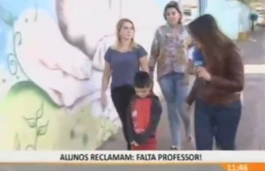
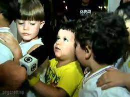

 
Depois volte e nos diga de qual mais gostou. Qual foi o mais legal? 1) O desenho realista do cachorro? 2) O menino com a banda Raça Negra? 3) O menino que só quer jogar videogame? 4) O menino-cachorro?